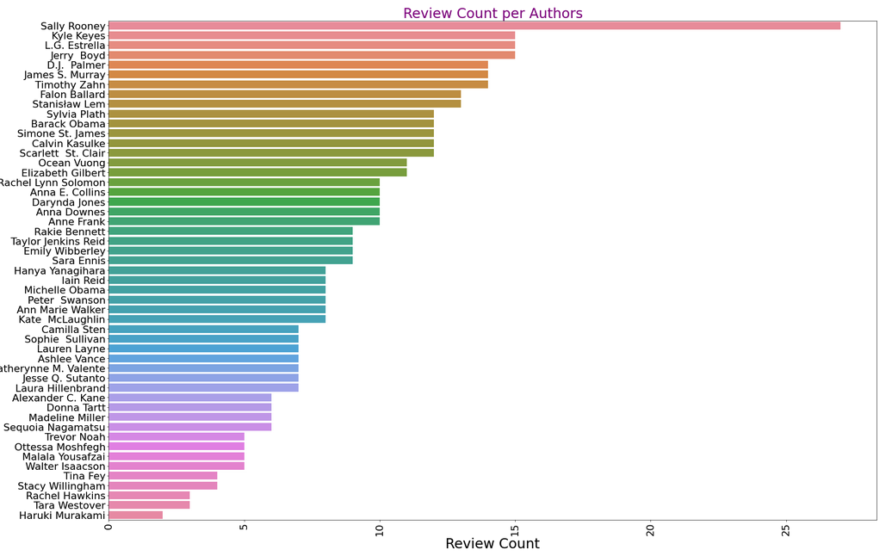
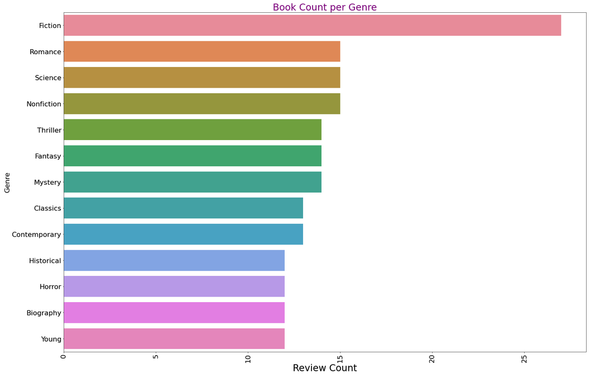
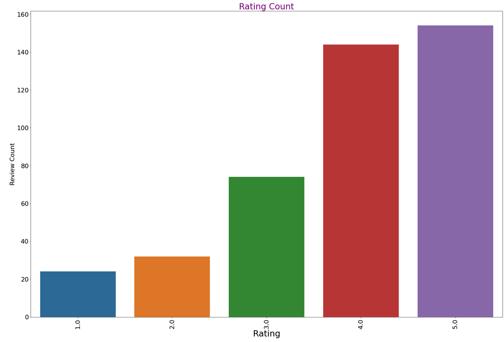
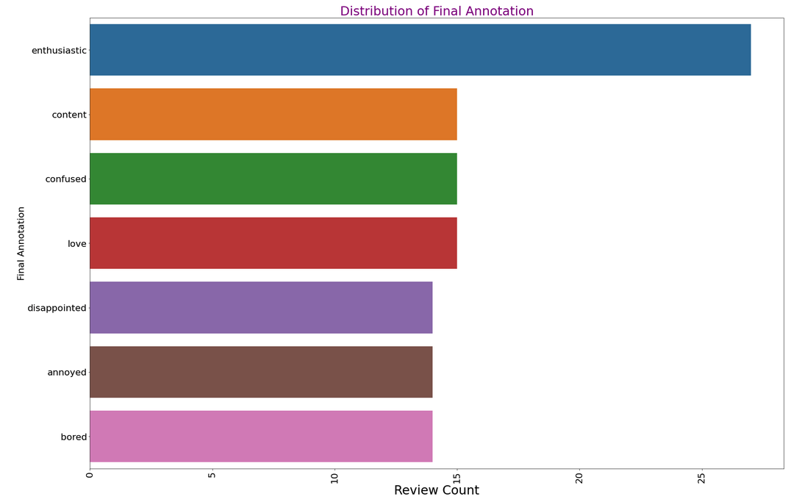

What is this corpus?
This is a corpus that we have built using the book reviews from Goodreads.
We have scraped the reviews for books along with the genre, the title, rating and
the author. In order to build upon this data and create an annotated corpus, we
have labelled the specific emotion of a review. These reviews can range from a
couple of sentences to a full paragraph with a maximum of 300 words. We have
focused only on English reviews. In order to narrow down the reviews that we
look at, we chose several distinct genres and, for each genre, we chose book,
scrap the reviews and then selected the books recommended by Goodreads in order
to find more reviews. This data has internal structure because along with the
review, we can extract the book title, the author, genre and the rating given by
the user. We have annotated this data using mechanical turks and each review is labelled as one of
the following emotions: enthusiastic, sad, bored, disappointed, content,
love, neutral. This corpus is of interest because the labelled emotions are distinct
from the numbered review and also because it is domain specific because it is
text written about books. The results can be used by other people to train their
models to recognize certain emotions. It would be interesting to see if
certain genres will have reviews with different associated emotions.
Corpus statistics
These visualizations are representative of our entire annotated corpus.




Search our corpus
Filters
Book Title
Author
Genre
Rating
Emotion
| title | author | genre | rating | review | emotion |
|---|